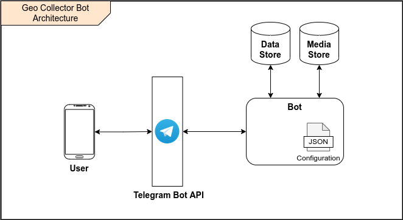

Documentation
To know how the Bot works you can follow this documentation:
Overview
Geo Collector Bot is a configurable Telegram Bot designed to allow users to collect geodata on the field.
The Bot poses a series of questions to the user and persists the answers to a database. Both the flow of questions and the persistence are configurable.
Architecture
It follows a basic, high-level architecture of the Bot.
{kind=link}
All the communications between the end user and the Bot are disintermediated by the Telegram Bot API, while the Bot communicates directly with a database for data storage and, optionally, one for media file storage.
How it works
Under the hood, the Bot manages a finite-state machine received through the configuration. The states of the machine are the questions posed to the user, and the answers are what causes the transitions between states.
It follows a sequence diagram that shows the internal flow of the Bot when a user issues a new interaction with the
/collect command (remember that all the communications between the user and the Bot pass through the Telegram
Bot API).
{kind=link}
To better understand the flow, lets consider a Bot with the following basic configuration (for a detailed explanation see the relevant section).
{
"dataStorage": { ... },
"flow": {
"firstStepId": "description",
"steps": [
{
"id": "description",
"question": "Please, describe the issue",
"config": {
"type": "text"
},
"nextStepId": "location"
},
{
"id": "location",
"question": "Please, provide your precise location",
"config": {
"type": "location"
}
}
]
}
}
Whenever a user sends the /collect command, the Bot starts a new interaction. Firstly, it checks if the user
already has an ongoing interaction, in which case it sends back an error to the user. If no interaction is found on the
database, the Bot creates a new one using the id of the chat as key to link the interaction and the user.
On our database we have a new record with the following structure:
{
"id": "123", // Unique identifier of the interaction
"chatId": "456", // Unique identifier of the user's chat
"username": "user_name", // Username of the user performing the interactions
"currStepId": "description", // Id of the current step (in this case equal to the id of the first step)
"interactionState": "ongoing", // State of the interaction
}
The Bot reads the configuration to find the first step and sends to the user the first question (Please, describe the issue, in our example).
Being the Bot stateless, it now looses any knowledge about the interaction or the users, and just keep listening for new messages. This means that the user can respond to the question asynchronously, at any time it wants.
When the user does respond, the Bot queries the database to find an interaction with interactionState equals to
ongoing and chatId equals to the identifier of the user’s chat. If none is found, an error is sent back,
otherwise, the answer is validated against the current step configuration (in our example, the answer has to be a text message).
Once the answer has been successfully validated, the Bot finds the next step (step location in our example), and
updates the interaction on the database. The record will now be:
{
"id": "123", // Unique identifier of the interaction
"chatId": "456", // Unique identifier of the user's chat
"username": "user_name", // Username of the user performing the interactions
"currStepId": "location", // Id of the current step (in this case equal to the id of the second step)
"interactionState": "ongoing", // State of the interaction
"description": "Answer to the first question"
}
The process is repeated for the location step:
the user receives the message Please, provide your precise location,
the provided answer is checked to be a valid location, and
since the step is the last, no other question is sent to the user.
The record is updated for the last time ending up being:
{
"id": "123", // Unique identifier of the interaction
"chatId": "456", // Unique identifier of the user's chat
"username": "user_name", // Username of the user performing the interactions
"currStepId": "location", // Id of the current step (in this case equal to the id of the last step)
"interactionState": "completed", // State of the interaction
"description": "Answer to the first question",
"location": "User's provided location"
}
Usage
Available commands
The Bot exposes the following commands.
/startto start the Bot.
/helpto get information about the Bot.
/collectto start a new data gathering process.
/abortto abort the currently ongoing interaction.
/skipto skip the current question (if possible).
Create a new Bot
The first thing you need to do is create a new Telegram Bot, following the official documentation.
You will receive an authentication token that you will need to provide to this service as an environment variable.
Run with Docker Compose
Since you need more than one service to run the Bot (e.g., a database and the Bot itself), Docker Compose may come in handy.
The examples <https://github.com/opengeolab/geocollectorbot/tree/main/examples> folder of the repository contains some set-ups that allow you to quickly run a complete functioning Bot with different configurations using Docker Compose.
To use them, you just need to download the directory and follow the instructions in the README.md file you can
find inside.
Run with Docker
If you don’t want to set up your whole project using Docker Compose, you can run the standalone Bot Docker image with the following command:
docker run --name geo-collector-bot \
--detach \
-e TELEGRAM_AUTH_TOKEN="<telegram_auth_token>" \
-v <absolute_path_to_config_file>:/home/node/config.json \
-p 8080:8080 \
geolabpolimi/geo-collector-bot
Now your Bot will be available on localhost:8080.
Let’s go through the lines of the command one by one.
docker run is the command to start the container. You can find a reference here.
--name geo-collector-bot sets the name of the container.
--detach runs the container in the background.
-e TELEGRAM_AUTH_TOKEN="<telegram_auth_token>" sets the environment variable TELEGRAM_AUTH_TOKEN. You
need to substitute <telegram_auth_token> with the token generated here. The other
variables are not set here since we want to use their default value, but you can provide your own values
with the same syntax (i.e., -e <variable_name>=<variable_value>).
-v <absolute_path_to_config_file>:/home/node/config.json mounts a new volume
containing the configuration file. You need to substitute <absolute_path_to_config_file> with
the absolute path of your configuration file on the host. Please note that with this command, in the container the file
will be placed under /home/node/config.json which is the default value of the CONFIGURATION_PATH environment
variable. If you provide a different value for this variable you need to change tht mount path accordingly.
-v <absolute_path_to_custom_translations_folder>:/home/node/custom_locales mounts a new volume containing the
custom translation files. The line is not in the command above, add it if you need the functionality.
-p 8080:8080 exposes the port on which the Bot runs.
geolabpolimi/geo-collector-bot is the name of the image to run.
Run locally
To run the Bot locally you firstly need to clone the repository running
git clone https://gitlab.com/geolab.como/geocollectorbot.git
The Bot is written in Typescript, so you will need to install Node.js 14+ and yarn
To set up Node, please if possible try to use nvm, so you can manage multiple versions easily. Once you have installed nvm, you can go inside the directory of the project and simply run
nvm install
and the .nvmrc file will install and select the correct version of Node if you don’t already have it.
To install Yarn, run
npm install --global yarn
Now you need to install the project dependencies with
yarn install
and build the project with
yarn build
To run, the Bot will need an environment variables file and a configuration file. You can
find an example of both of them in the repository, namely example.env and config.example.json.
Make your own copy of the files with
cp ./example.env ./.env
cp ./config.example.json ./config.json
and update them according to your needs.
Once you have all your dependency in place, you can launch the Bot with
yarn start
Build a local Docker image
Now that you have everything set up, if you want you can build your own Docker image running
docker build -t geo-collector-bot .
in the root directory of the repository.
Configuration
The service needs some configuration in order to be used effectively.
Environment variables
The service accepts the following environment variables.
Name |
Type |
Required |
Description |
Default |
|---|---|---|---|---|
PORT |
integer |
✓ |
port on which the service will be exposed |
8080 |
LOG_LEVEL |
string |
✓ |
|
|
CONFIGURATION_PATH |
string |
✓ |
path to the configuration file |
|
CUSTOM_TRANSLATIONS_FOLDER_PATH |
string |
X |
optional path to the folder containing custom translation files |
|
TELEGRAM_AUTH_TOKEN |
string |
✓ |
unique authentication token of your Telegram Bot |
|
UPDATE_MODE |
string |
X |
defines how the Bot will receive updated. Possible values are |
|
PUBLIC_URL |
string |
X |
public url on which the Bot is exposed. Needed (and required) if UPDATE_MODE is |
|
GET_MEDIA_BASE_PATH |
string |
X |
base url on which collected medias are served |
|
Update mode
Telegram Bots can receive updates from the Telegram server in two ways, polling or webhook, as explained here.
Geo Collector Bot supports both of these modalities, through the UPDATE_MODE environment variable.
If the variable is set to webhook, you also need to provide a value to the PUBLIC_URL environment variable.
This should be the public url on which your instance of this service is reachable (e.g., https://geo-collector-bot.herokuapp.com).
Service configuration
The service needs to be configured to work properly, and this configuration should be provided through a JSON file. The schema of the configuration can be found (and referenced from) here, while an example can be found here.
The configuration has five main blocks
data storage configuration,
media storage configuration,
hooks configuration,
resulting in the following object:
{
"settings": { ... },
"flow": { ... },
"dataStorage": { ... },
"mediaStorage": { ... }
"hooks": { ... }
}
Questions flow
The flow property is used to configure the flow of questions that the Bot will pose to the user. It has the following structure:
{
"firstStepId": "id of the first step",
"steps": [ ... ]
}
Where,
firstStepId is the unique identified of the first step.
steps is an array of objects, each element of which represents a question.
Steps
Each element of the steps array has the following structure:
{
"id": "id of the step",
"question": "question text",
"config": { ... },
"persistAs": "key on the db",
"nextStepId": "id of the next step"
"skippable": "true if the question can be skipped"
}
- Where,
id is the unique identified of the step.
question is the message sent to the user.
config defines the type of question (more about this below).
persistAs can be used to specify how the answer is persisted on the database. It is optional, if not provided theid will be used instead.
nextStepId is the identifier of the following step. It is optional, if not provided the sept is considered to be the end if the interaction.
skippable is a boolean flag stating if the question can be skipped with command
/skip.
Warning
There is a set of reserved keys used by the Bot, and properties id and persistAs cannot be equal to
one of those keys. The reserved keys are id, chatId, username, currStepId, interactionState,
createdAt, and updatedAt. On top of those, each data storage has a set of its own reserved keys.
Consult the relative documentation to know which values are prohibited.
While the property question can be a simple string, the Bot gives you the possibility to internationalize the messages
sent to the user. To do so, you can provide an object whose keys are
ETF language tags, and values are localized versions of the question
text. If the language of the user is not found, the english translation will be used as fallback, so remember to
always provide the en key in your localized questions.
For example, a correctly localized question has the following form:
{
"question": {
"en": "English text of the question",
"it": "Testo della domanda in italiano"
}
}
Tip
The bot supports Markdown V2 formatting in your questions.
It follows an explanation of the different types of questions you can use in your Bot.
Text question
This type of question accepts a text as answer.
The config props for this kind of step has the following shape:
{
"type": "text"
}
Multiple choice question
This type of question presents accepts one of a series of predefined options as answer.
The config props for this kind of step has the following shape:
{
"type": "multipleChoice",
"options": [ ... ]
}
The options field is used to specify the possible answer to be presented to the user. It is an array whose items are arrays of objects. Each element of the outer array is a row of options, while each element of the inner arrays is a column. The options themselves are the items of the inner arrays, and they have the following shape:
{
"text": "...",
"value": "..."
}
- Where,
text is the visualized text. As for questions, it can be a string or an object of localized strings.
value is the actual value of the answer, saved in the database.
Location question
This type of question accepts the current location of the user as answer.
The config props for this kind of step has the following shape:
{
"type": "location"
}
Media question
This type of question accepts a single media as answer.
The config props for this kind of step has the following shape:
{
"type": "singleMedia",
"subType": "photo" | "video"
}
With property subType you can restrict the accepted answers to a specific media type. If the property is not
set, the Bot will accept all types of media.
To be able to use media questions in your flow you need to set up a media storage. The media itself
will be saved in the media storage, while on the data storage will be persisted the relative URL to be called to download
the media composed by <GET_MEDIA_BASE_PATH env variable>/:mediaId.
Data storage
The dataStorage property is used to configure where the interactions should be persisted. The Bot is built to
support multiple storage types, but for now only PostgreSQL can be used.
PostgreSQL
To use PostgreSQL as storage, the property dataStorage should have the following structure:
{
"type": "postgres",
"configuration": {
"connectionString": "db connection string",
"interactionsTable": "name of the table where interactions are saved",
"ssl": false
}
}
The table you create to save your interaction should have the following base columns:
id SERIAL
chat_id bigint NOT NULL
username character varying
curr_step_id character varying
interaction_state character varying
created_at timestamp with time zone
updated_at timestamp with time zone
with id being the primary key of the table.
Warning
The name of those base columns cannot be used as property id or persistAs of your steps, on top of the
keys listed in the steps section.
Then you should add to the table a column for each of your questions named as the id or persistAs property
of the corresponding step.
The column for a text question should be of type
character varying.The column for a multiple choice question should be of type
character varying.The column for a location question should be of type
character varying.The column for a media question should be of type
geometry(you will need PostGIS extension).
Media storage
The mediaStorage property is used to configure where the media send by users should be persisted. The Bot is built
to support multiple storage types, but for now only file system can be used.
Regardless of the storage used, the Bot will persist on the database the path to be called to retrieve the media in the
form of /media/:media_id.
File system
To use file system as storage, the property mediaStorage should have the following structure:
{
"type": "fileSystem",
"configuration": {
"folderPath": "absolute path of the folder in which media will be saved"
}
}
Tip
If you are using the file system ad media storage in a Docker container, remember to bind a volume to the configured
folderPath (that in this case will refer to a location inside the container) to persist the saved media after
the container is stopped.
Global settings
The settings property can be used to define the following global settings regarding the Bot:
includeUserInfoInGetInteractionsApiis a boolean flag that states if user’s data should be returned by the get interactions API.
Hooks
Hooks are functions run in response to specific events in the Bot lifecycle.
On complete
The onComplete hook is run every time an interaction is completed with success. If configured, the Bot will
perform a POST HTTP request to the specified url with the whole interaction as body.
The hook configuration has the following structure:
{
"hooks": {
"onComplete": {
"type": "http-post",
"url": "The url to which the POST call should be exectued"
}
}
}
Configuration values interpolation
Each string value in the data storage and media storage configuration can be substituted at run time with an environment variable if it is annotated with a Handlebars template.
For example, lets consider the following data storage configuration:
{
"type": "postgres",
"configuration": {
"connectionString": "{{CONNECTION_STRING}}",
"interactionsTable": "interactions"
}
}
If in your environment you have the CONNECTION_STRING variable, the final configuration will look like this:
{
"type": "postgres",
"configuration": {
"connectionString": "connection_string_from_environment",
"interactionsTable": "interactions"
}
}
Custom translations
This Bot is built to be multi-language. By default, only English translation is offered, and English is the default and fallback language in case the translation for the user’s language is not provided.
You can easily provide your own custom translations inside a folder referenced by the
CUSTOM_TRANSLATIONS_FOLDER_PATH environment variables. Each translation file should be a valid
.yaml file (please note that .yml files will not be accepted) named as ietf_language_code.yaml
(e.g., en.yaml). An explanation of what IETF language tags are can be found here.
The bot always uses Markdown V2 as formatting option, so feel free to use it in your custom translation (pay attention to the characters that need to be escaped!).
The keys used by the bot can be found in the default english translation file.
Please note that if you provide your own translations, an en.yaml file should always be provided in your custom folder.
Exposed APIs
Get interactions
The GET - /interactions API returns a list of the interactions collected. With the includeUserInfoInGetInteractionsApi
setting you can control whether the API returns interactions chat id and username or not.
The complete schema of the API can be found here.
Send message
The POST - /send-message API can be used to programmatically send a message to specific chats. The API accepts
the following JSON body:
{
"chatIds": ["chat_1", "chat_2"] // Ids of the chats that should receive the message,
"message": "message to be sent to all chats"
}
The complete schema of the API can be found here.